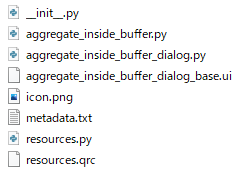
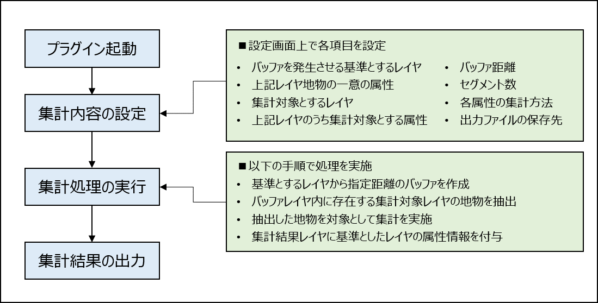

プラグイン設計概要
プラグインのファイル構成
本プラグインのファイル構成は以下の通りです。

上記のうち各ファイルの概要は以下の通りです。
| 名称(stat) | 概要 |
|---|---|
| __init__.py | 本プラグインの処理の開始点となるコードを記載 |
| aggregate_inside_buffer.py | 本プラグインの処理に係るコードを記載 |
| aggregate_inside_buffer_dialog.py | 本プラグインの表示画面の動作を設定するコードを記載 |
| aggregate_inside_buffer_dialog_base.ui | 本プラグインのGUIを設定 |
| icon.png | 本プラグインのアイコン画像の元データ |
| metadata.txt | 本プラグインに関するメタデータを記載 ※[プラグインの管理とインストール]の画面の表示内容に反映されている |
| resources.py | バイナリ変換されたアイコン画像 ※QGIS上で表示されるアイコン画像は本ファイルが反映されている |
| resources.qrc | アイコン画像を変換する際に相対パスで指定するコード |
プラグインにおける処理手順
本プラグインは、以下の手順で処理を実施します。

コード構成
本プラグインの処理を記載している「aggregate_inside_buffer.py」について、コードの概要を記載します。 なお、本プラグインはPython 3.7で作成しています。
| 関数名 | 概要 |
|---|---|
| __init__ tr add_action initGui unload |
QGISプラグインとして動作するため処理を記載 |
| run | 処理全体の流れを記載 |
| run_buffer | バッファを作成する処理について記載 |
| dissolve | 一意の属性に基づき地物を統合する処理を記載 |
| run_cul | 集計処理の流れを記載 |
| calculateFields | 集計対象レイヤの地物から属性値を取得し、集計する処理を記載 |
| aggregateValues | 各集計方法の計算方法を記載 |
| setAttributes | 集計結果データを出力レイヤへ格納する処理を記載 |
| addFile | 出力結果のファイルに保存する処理を記載 |